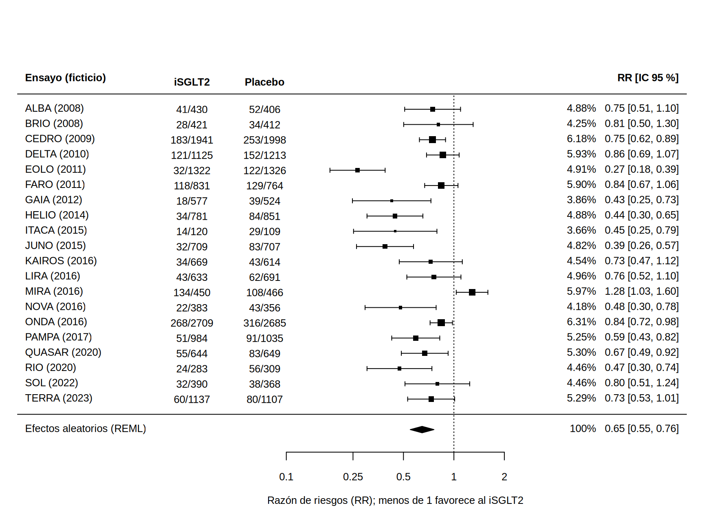
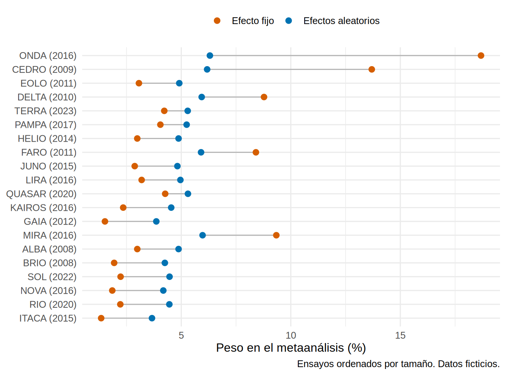

library(tidyverse)
library(metafor)
source("R/funciones_extra_a.R") # num(), pct()
source("R/simular_metaanalisis.R") # solo para el Paso 7 (repetir el proceso con otras semillas)
theme_set(theme_minimal(base_size = 12))
# 20 ensayos FICTICIOS (iSGLT2 vs placebo en ERC). El "oráculo" añade el log RR verdadero de cada ensayo.
ensayos <- read_csv("Bases/metaanalisis_isglt2.csv", show_col_types = FALSE)
oraculo <- read_csv("Bases/metaanalisis_isglt2_oraculo.csv", show_col_types = FALSE)
verdad <- list(rr_poblacion = 0.75, tau = 0.25, md = 0.90) # parámetros del simulador (R/simular_metaanalisis.R)Metaanálisis de efectos fijos y aleatorios
Nota🩺 Escenario
Tienes los veinte ensayos de iSGLT2 frente a placebo (ficticios, 21.3). Cada uno dice algo distinto: unos reducen el evento renal a casi un tercio, uno lo aumenta un 28 %, muchos tienen intervalos que cruzan el 1. El jefe pregunta: «¿y entonces, funciona o no, y cuánto?». El metaanálisis es la forma de promediar con criterio: dar más peso a los ensayos más precisos, y decidir si todos los ensayos estiman lo mismo (efecto fijo) o cosas parecidas pero distintas (efectos aleatorios).
Lo que vamos a hacer
- Combinar a mano los log RR con el inverso de la varianza y con DerSimonian-Laird, y comprobarlo con
metafor::rma()(REML, DL, HKSJ). - Dibujar el forest plot y ver cómo efectos fijos y aleatorios reparten el peso (qué pasa con los ensayos grandes).
- Metaanalizar el desenlace binario (cuentas, Mantel-Haenszel) y el continuo (diferencia de medias), y comparar con la verdad.
Todos los ensayos son ficticios. Como los generamos nosotros, sabemos la verdad: el RR medio de la población de ensayos es 0.75, la heterogeneidad real es τ = 0.25 y el efecto verdadero sobre la pendiente de TFGe es 0.9 mL/min/1.73 m² por año. Al final veremos si el metaanálisis las recupera.
Paso 1: lo que aporta cada ensayo
Cada ensayo da una estimación del log RR (el logaritmo del riesgo relativo de evento renal: negativo = a favor del fármaco) y su error estándar (EE), que mide cuánta confianza merece. Los ensayos grandes tienen EE pequeño.
ensayos |> transmute(estudio, pacientes = n_trat + n_ctrl, RR = round(exp(log_rr), 2), log_rr = round(log_rr, 3), se_log_rr = round(se_log_rr, 3)) |>
slice_head(n = 6)# A tibble: 6 × 5
estudio pacientes RR log_rr se_log_rr
<chr> <dbl> <dbl> <dbl> <dbl>
1 ALBA (2008) 836 0.75 -0.292 0.196
2 BRIO (2008) 833 0.81 -0.213 0.243
3 CEDRO (2009) 3939 0.75 -0.294 0.092
4 DELTA (2010) 2338 0.86 -0.152 0.114
5 EOLO (2011) 2648 0.27 -1.32 0.193
6 FARO (2011) 1595 0.84 -0.173 0.117Una tentación es sumar todos los pacientes como si fueran un solo ensayo gigante. Eso ignora que cada ensayo tiene su propio riesgo basal (aquí el riesgo en el placebo va de 7 % a 27 %, según el seguimiento y la población) y rompe la aleatorización. La suma ingenua da un RR de 0.71; aquí no queda lejos del efecto fijo, pero por casualidad: con otro reparto de tamaños y riesgos basales puede ir en cualquier dirección. Se combinan siempre las estimaciones de cada ensayo, no los pacientes.
Paso 2: efecto fijo, a mano
El modelo de efecto fijo supone que todos los ensayos estiman el mismo efecto verdadero y que sus diferencias son solo azar de muestreo. El estimador es un promedio ponderado por el inverso de la varianza (cuanto más preciso, más pesa):
\[ \hat\theta_{FE} = \frac{\sum w_i\,y_i}{\sum w_i}, \qquad w_i = \frac{1}{EE_i^2}, \qquad EE(\hat\theta_{FE}) = \frac{1}{\sqrt{\sum w_i}} \]
y <- ensayos$log_rr; ee <- ensayos$se_log_rr; k <- length(y)
meta_mano <- function(y, ee, tau2 = 0) { # tau2 = 0 es efecto fijo
w <- 1 / (ee^2 + tau2) # peso = inverso de la varianza
est <- sum(w * y) / sum(w) # promedio ponderado
se <- 1 / sqrt(sum(w))
c(estimado = est, se = se, rr = exp(est), li = exp(est - 1.96 * se), ls = exp(est + 1.96 * se))
}
fe_mano <- meta_mano(y, ee)
fe_mano estimado se rr li ls
-0.30885321 0.03387729 0.73428855 0.68711562 0.78470006 # Q de Cochran: cuánto se aleja cada ensayo del promedio fijo, en unidades de su precisión
w_fe <- 1 / ee^2
Q <- sum(w_fe * (y - fe_mano[["estimado"]])^2)
c(Q = Q, gl = k - 1, p = pchisq(Q, k - 1, lower.tail = FALSE)) Q gl p
9.161843e+01 1.900000e+01 1.711778e-11 El RR de efecto fijo es 0.73 (IC 95 % 0.69 a 0.78). Pero la Q de Cochran vale 91.6 con 19 grados de libertad (p < 0.001): los ensayos se alejan del promedio mucho más de lo que permite el azar. El supuesto de «todos estiman lo mismo» no se sostiene; el intervalo de efecto fijo es demasiado estrecho (21.5 explica por qué).
Paso 3: efectos aleatorios, DerSimonian-Laird a mano
El modelo de efectos aleatorios supone que cada ensayo estima su propio efecto, y que esos efectos varían alrededor de una media con una desviación τ (tau, la heterogeneidad entre ensayos). Se estima τ² y se suma a la varianza de cada ensayo, lo que reparte el peso de forma más pareja:
\[ \hat\tau^2_{DL} = \max\left(0,\ \frac{Q - (k-1)}{\sum w_i - \sum w_i^2 / \sum w_i}\right), \qquad w_i^* = \frac{1}{EE_i^2 + \hat\tau^2} \]
tau2_dl <- max(0, (Q - (k - 1)) / (sum(w_fe) - sum(w_fe^2) / sum(w_fe))) # DerSimonian-Laird (1986)
dl_mano <- meta_mano(y, ee, tau2 = tau2_dl)
c(tau2 = tau2_dl, tau = sqrt(tau2_dl), dl_mano[c("rr", "li", "ls")]) tau2 tau rr li ls
0.09154961 0.30257166 0.64800164 0.55460721 0.75712347 Ahora las mismas cuentas con el paquete metafor (Viechtbauer, 2010), con cuatro variantes. rma() recibe el efecto (yi) y su error estándar (sei):
m_fe <- rma(yi = log_rr, sei = se_log_rr, data = ensayos, method = "FE")
m_dl <- rma(yi = log_rr, sei = se_log_rr, data = ensayos, method = "DL")
m_reml <- rma(yi = log_rr, sei = se_log_rr, data = ensayos, method = "REML") # el más usado hoy
m_hk <- rma(yi = log_rr, sei = se_log_rr, data = ensayos, method = "REML", test = "knha") # Hartung-Knapp-Sidik-Jonkman
res_rr <- map_dfr(list(`Efecto fijo` = m_fe, `DerSimonian-Laird` = m_dl, `REML` = m_reml, `REML + HKSJ` = m_hk), \(m) {
tibble(RR = exp(coef(m)), li = exp(m$ci.lb), ls = exp(m$ci.ub), tau2 = m$tau2)
}, .id = "metodo")
res_rr |> mutate(across(where(is.numeric), \(x) round(x, 3)))# A tibble: 4 × 5
metodo RR li ls tau2
<chr> <dbl> <dbl> <dbl> <dbl>
1 Efecto fijo 0.734 0.687 0.785 0
2 DerSimonian-Laird 0.648 0.555 0.757 0.092
3 REML 0.646 0.549 0.761 0.104
4 REML + HKSJ 0.646 0.544 0.768 0.104Qué vemos.
rma(method = "DL")reproduce exactamente nuestra cuenta a mano: τ² = 0.0915 (a mano, 0.0915) y RR = 0.648 (a mano, 0.648). No hay magia: es un promedio ponderado.- Los métodos de efectos aleatorios coinciden en lo esencial: RR ≈ 0.65. REML estima τ² algo mayor (0.104) que DL (0.092); la diferencia es pequeña frente a la incertidumbre de τ² con solo 20 ensayos (EE ≈ 0.045).
- HKSJ (
test = "knha") corrige el intervalo para tener en cuenta que τ² es estimado y usa la distribución t en lugar de la normal. Aquí da 0.54 a 0.77, casi igual al de REML (0.55 a 0.76). Con pocos ensayos (< 10) y heterogeneidad, HKSJ suele ser más honesto que el intervalo normal (IntHout y cols., 2014). - Efecto fijo frente a aleatorios: 0.73 frente a 0.65. No es un detalle: es la diferencia entre una reducción del 27 % y una del 35 %. Veamos de dónde sale.
Paso 4: el forest plot
El forest plot (gráfico de bosque) es el gráfico de todo metaanálisis: una fila por ensayo con su estimación (cuadrado, de tamaño proporcional al peso) y su IC, y abajo el estimador combinado (rombo). metafor::forest() lo dibuja; atransf = exp muestra el eje en escala RR aunque el modelo trabaje con logaritmos.
forest(m_reml, atransf = exp, at = log(c(0.1, 0.25, 0.5, 1, 2)), slab = ensayos$estudio, cex = 0.8,
xlab = "Razón de riesgos (RR); menos de 1 favorece al iSGLT2", header = c("Ensayo (ficticio)", "RR [IC 95 %]"),
mlab = "Efectos aleatorios (REML)", showweights = TRUE, xlim = c(-6, 3.2),
ilab = cbind(paste0(ensayos$ev_trat, "/", ensayos$n_trat), paste0(ensayos$ev_ctrl, "/", ensayos$n_ctrl)), ilab.xpos = c(-3.6, -2.6))
text(c(-3.6, -2.6), k + 1.8, c("iSGLT2", "Placebo"), cex = 0.8, font = 2)
La lectura del forest es siempre la misma: ¿hacia dónde apuntan los cuadrados? (casi todos a la izquierda del 1), ¿cuánto se solapan los intervalos? (poco: hay un ensayo con RR 0.27 y otro con 1.28) y ¿dónde cae el rombo? (0.65, con IC 0.55 a 0.76). Los intervalos que no se tocan entre sí son la señal visual de heterogeneidad (21.5).
Paso 5: ¿qué pasa con los ensayos grandes?
En efectos fijos el peso es solo precisión, así que los ensayos más grandes dominan. En efectos aleatorios, al sumar τ² a todas las varianzas, la parte «propia» de cada ensayo se vuelve más importante que su tamaño y el peso se aplana:
pesos <- tibble(estudio = ensayos$estudio, pacientes = ensayos$n_trat + ensayos$n_ctrl,
`Efecto fijo` = weights(m_fe), `Efectos aleatorios` = weights(m_reml))
pesos |> arrange(desc(pacientes)) |> slice_head(n = 4) |> mutate(across(where(is.numeric), \(x) round(x, 1)))# A tibble: 4 × 4
estudio pacientes `Efecto fijo` `Efectos aleatorios`
<chr> <dbl> <dbl> <dbl>
1 ONDA (2016) 5394 18.7 6.3
2 CEDRO (2009) 3939 13.7 6.2
3 EOLO (2011) 2648 3.1 4.9
4 DELTA (2010) 2338 8.8 5.9top3 <- pesos |> slice_max(pacientes, n = 3) |> summarise(across(c(`Efecto fijo`, `Efectos aleatorios`), sum))
# ¿Los ensayos grandes tienen efectos menos favorables? RR mediano de la mitad más grande y de la más pequeña
mitades <- ensayos |>
mutate(mitad = if_else(n_trat + n_ctrl >= median(n_trat + n_ctrl), "grandes", "pequenos")) |>
group_by(mitad) |> summarise(rr_mediano = exp(median(log_rr)))pesos |>
pivot_longer(c(`Efecto fijo`, `Efectos aleatorios`), names_to = "modelo", values_to = "peso") |>
mutate(estudio = fct_reorder(estudio, pacientes)) |>
ggplot(aes(peso, estudio, color = modelo)) +
geom_line(aes(group = estudio), color = "grey70") +
geom_point(size = 2.4) +
scale_color_manual(values = c("Efecto fijo" = "#D55E00", "Efectos aleatorios" = "#0072B2"), name = NULL) +
labs(x = "Peso en el metaanálisis (%)", y = NULL, caption = "Ensayos ordenados por tamaño. Datos ficticios.") +
theme(legend.position = "top")
Qué vemos. Los tres ensayos más grandes reúnen el 35 % del peso en efecto fijo pero solo el 17 % en efectos aleatorios. ONDA, el mayor (5 394 pacientes), pasa de 18.7 % a 6.3 %. Y como los ensayos grandes tienden a tener efectos algo menos favorables que los pequeños (RR mediano de 0.74 en la mitad más grande frente a 0.70 en la más pequeña; el de ONDA es 0.84), el efecto fijo, que sigue a los grandes, queda más cerca del 1 que el aleatorio. Esa asociación entre tamaño y efecto es lo que 21.6 llama efecto de estudios pequeños y contrasta formalmente. Elegir entre uno y otro modelo no debe hacerse por el valor de p de la Q: se elige según la pregunta y la plausibilidad clínica. Con ensayos clínicamente distintos (población, seguimiento, definición del evento) casi nunca es creíble que todos estimen el mismo efecto, y por eso el modelo de efectos aleatorios es el punto de partida habitual.
Paso 6: desenlace binario con cuentas, y desenlace continuo
Hasta aquí usamos el log RR que da cada ensayo. Cuando tienes las cuentas (eventos y tamaños por brazo) puedes elegir la medida y el método. escalc() calcula el efecto y su varianza; rma.mh() aplica Mantel-Haenszel, que se comporta bien con pocos eventos y no necesita corrección de continuidad cuando no hay ceros (pero es un método de efecto fijo):
dat_rr <- escalc(measure = "RR", ai = ev_trat, n1i = n_trat, ci = ev_ctrl, n2i = n_ctrl, data = ensayos)
dat_or <- escalc(measure = "OR", ai = ev_trat, n1i = n_trat, ci = ev_ctrl, n2i = n_ctrl, data = ensayos)
mh_rr <- rma.mh(ai = ev_trat, n1i = n_trat, ci = ev_ctrl, n2i = n_ctrl, data = ensayos, measure = "RR")
mh_or <- rma.mh(ai = ev_trat, n1i = n_trat, ci = ev_ctrl, n2i = n_ctrl, data = ensayos, measure = "OR")
re_rr <- rma(yi, vi, data = dat_rr, method = "REML")
re_or <- rma(yi, vi, data = dat_or, method = "REML")
tibble(medida = c("RR", "RR", "OR", "OR"), modelo = c("Mantel-Haenszel (fijo)", "REML (aleatorio)", "Mantel-Haenszel (fijo)", "REML (aleatorio)"),
estimado = c(exp(coef(mh_rr)), exp(coef(re_rr)), exp(coef(mh_or)), exp(coef(re_or))),
li = c(exp(mh_rr$ci.lb), exp(re_rr$ci.lb), exp(mh_or$ci.lb), exp(re_or$ci.lb)),
ls = c(exp(mh_rr$ci.ub), exp(re_rr$ci.ub), exp(mh_or$ci.ub), exp(re_or$ci.ub))) |>
mutate(across(where(is.numeric), \(x) round(x, 3)))# A tibble: 4 × 5
medida modelo estimado li ls
<chr> <chr> <dbl> <dbl> <dbl>
1 RR Mantel-Haenszel (fijo) 0.712 0.666 0.76
2 RR REML (aleatorio) 0.643 0.545 0.758
3 OR Mantel-Haenszel (fijo) 0.682 0.633 0.734
4 OR REML (aleatorio) 0.616 0.514 0.738Qué vemos. escalc() solo agrega 0.5 cuando hay una celda en cero, mientras que la base trae el log RR calculado con 0.5 en todas las celdas; por eso el RR de efectos aleatorios coincide casi exactamente con el nuestro (0.643 frente a 0.646). Mantel-Haenszel da 0.71, más cercano al efecto fijo ponderado por precisión. El OR (0.62 en efectos aleatorios) es más alejado del 1 que el RR (0.64): con eventos que no son raros (riesgo en el placebo de hasta 27 %), el OR exagera el efecto si se interpreta como un RR. Para decisiones clínicas, el RR (o el RD con el riesgo basal del paciente) comunica mejor.
El desenlace continuo (la diferencia de medias de la pendiente de TFGe, en mL/min/1.73 m² por año) se metaaliza igual, con la diferencia de medias (md_tfg) y su EE. Se usa diferencia de medias cuando todos miden en la misma unidad; la diferencia de medias estandarizada (DEM/SMD) solo cuando miden la misma cosa con escalas distintas.
m_md <- rma(yi = md_tfg, sei = se_md_tfg, data = ensayos, method = "REML")
c(MD = coef(m_md), li = m_md$ci.lb, ls = m_md$ci.ub, tau2 = m_md$tau2, I2 = m_md$I2) |> round(3)MD.intrcpt li ls tau2 I2
0.984 0.849 1.120 0.063 71.072 La diferencia de medias combinada es 0.98 mL/min/1.73 m² por año (IC 95 % 0.85 a 1.12): a favor del iSGLT2 y compatible con la verdad (0.9), que cae dentro del intervalo.
Paso 7: ¿recupera la verdad? El sesgo de publicación
Sabemos cuál es la verdad. Comparemos:
tibble(cantidad = c("RR medio verdadero de la población de ensayos (simulador)",
"RR medio verdadero de estos 20 ensayos (oráculo)",
"Efecto fijo (inverso de la varianza)", "Efectos aleatorios (REML)"),
RR = c(verdad$rr_poblacion, exp(mean(oraculo$theta_verdadero)), exp(coef(m_fe)), exp(coef(m_reml)))) |>
mutate(RR = round(RR, 3))# A tibble: 4 × 2
cantidad RR
<chr> <dbl>
1 RR medio verdadero de la población de ensayos (simulador) 0.75
2 RR medio verdadero de estos 20 ensayos (oráculo) 0.661
3 Efecto fijo (inverso de la varianza) 0.734
4 Efectos aleatorios (REML) 0.646Qué vemos. El metaanálisis estima muy bien lo que debe: el RR medio verdadero de estos 20 ensayos es 0.66 y el de efectos aleatorios es 0.65. Pero no recupera el 0.75 de la población de ensayos: está más lejos del 1 y su IC (0.55 a 0.76) apenas lo incluye. ¿Por qué? Porque los 20 ensayos no son una muestra al azar de todos los que se hicieron: en el simulador, los ensayos pequeños y poco favorables se publican menos. Es el sesgo de publicación: lo que ves es una selección favorable y, aunque calcules perfecto, estimas la media de la selección. ¿Es un accidente de esta semilla? Repetimos el proceso (simular, publicar, metaanalizar) en 100 «mundos» distintos:
mundos <- map_dfr(1:100, \(s) {
e <- simular_metaanalisis(semilla = 1000 + s) # otros 20 ensayos publicados
m <- rma(e$log_rr, sei = e$se_log_rr, method = "REML")
tibble(estimado = coef(m), verdad_publicados = mean(e$theta_verdadero),
cubre = m$ci.lb < log(verdad$rr_poblacion) & m$ci.ub > log(verdad$rr_poblacion))
})
c(RR_estimado_promedio = exp(mean(mundos$estimado)), RR_verdadero_de_los_publicados = exp(mean(mundos$verdad_publicados)),
RR_verdadero_de_la_poblacion = verdad$rr_poblacion, cobertura_IC95_del_075 = mean(mundos$cubre)) |> round(3) RR_estimado_promedio RR_verdadero_de_los_publicados
0.703 0.708
RR_verdadero_de_la_poblacion cobertura_IC95_del_075
0.750 0.840 En promedio el RR estimado es 0.70, casi idéntico al RR verdadero de los ensayos publicados (0.71), pero 0.05 por debajo del 0.75 de la población. (La selección fue más intensa en nuestro mundo de la semilla 2121, con 0.66, que en el promedio: es normal que varíe de un mundo a otro.) El IC al 95 % contiene el 0.75 solo en el 84 % de los mundos, no en el 95 % que se espera de un IC bien calibrado. El metaanálisis no corrige por sí solo la selección de lo que se publica; cómo detectarla, y sus límites, es el tema de 21.6.
Tip💡 Con el paquete {meta} (código no verificado en el entorno de pruebas del libro)
meta es el paquete que más se usa en la literatura clínica. metabin() trabaja con las cuentas y metagen() con la estimación y su EE. Argumentos de versiones recientes (en las antiguas, comb.fixed/comb.random y hakn = TRUE):
library(meta)
mb <- metabin(event.e = ev_trat, n.e = n_trat, event.c = ev_ctrl, n.c = n_ctrl, studlab = estudio, data = ensayos,
sm = "RR", method = "MH", common = TRUE, random = TRUE, method.tau = "REML",
method.random.ci = "HK", prediction = TRUE)
summary(mb)
forest(mb)
mg <- metagen(TE = md_tfg, seTE = se_md_tfg, studlab = estudio, data = ensayos, sm = "MD",
method.tau = "REML", method.random.ci = "HK", prediction = TRUE)Trampas frecuentes
Advertencia⚠️ Errores clásicos del metaanálisis
- Sumar pacientes de ensayos distintos como si fueran uno solo (Paso 1).
- Elegir efecto fijo o aleatorio según el p de la Q: la elección es conceptual; con heterogeneidad real, el intervalo de efecto fijo es engañosamente estrecho.
- Meter el RR en el modelo sin logaritmo: el metaanálisis se hace en escala log (RR, OR, HR) y se transforma al final con
exp(). - Interpretar el OR como si fuera un RR cuando el evento no es raro.
- Creer que el metaanálisis corrige el sesgo de los estudios: promedia lo que le das, incluidos el sesgo de publicación y el de los ensayos individuales.
Importante🎯 En resumen
- El metaanálisis es un promedio ponderado por el inverso de la varianza. En efectos aleatorios se suma τ² a la varianza de cada ensayo y el peso se aplana: los tres ensayos más grandes pasan de 35 % a 17 % del peso.
- Con estos 20 ensayos: RR de efecto fijo = 0.73; efectos aleatorios (REML) = 0.65 (IC 0.55 a 0.76); τ² = 0.104.
rma(method = "DL")coincide con la cuenta a mano. - Con cuentas puedes usar Mantel-Haenszel (RR 0.71, OR 0.68); el desenlace continuo da una diferencia de 0.98 mL/min/1.73 m² por año, compatible con la verdad (0.9).
- El resultado recupera la media de los ensayos publicados (0.66), no la de la población de ensayos (0.75): el sesgo de publicación desplaza el resultado (21.6).
Ejercicio
- Calcula a mano el RR de efectos aleatorios sin el ensayo ONDA (puedes usar
meta_mano()contau2 = tau2_dl). ¿Cambia mucho? ¿Y el efecto fijo? - Repite
rma()conmethod = "PM"(Paule-Mandel) ymethod = "EB". ¿Cuánto varía τ² entre estimadores? - Con
rma.mh(..., measure = "RD")calcula la diferencia de riesgos de Mantel-Haenszel. ¿Qué te dice sobre cuántos pacientes habría que tratar para evitar un evento, y qué le falta a esa cifra para aplicarla a un paciente concreto?
Referencias
- DerSimonian R, Laird N. Meta-analysis in clinical trials. Control Clin Trials. 1986;7:177-188.
- Viechtbauer W. Conducting meta-analyses in R with the metafor package. J Stat Softw. 2010;36(3):1-48.
- IntHout J, Ioannidis JPA, Borm GF. The Hartung-Knapp-Sidik-Jonkman method for random effects meta-analysis is straightforward and considerably outperforms the standard DerSimonian-Laird method. BMC Med Res Methodol. 2014;14:25. (por verificar)
- Higgins JPT y cols. (eds.). Cochrane Handbook for Systematic Reviews of Interventions, capítulos de metaanálisis.